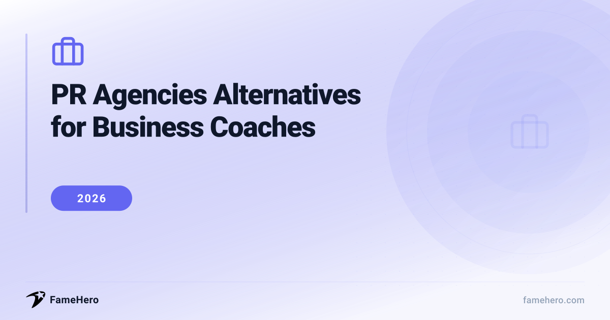

PR Agencies Alternatives for Business Coaches in 2026 (Build Authority & Credibility)

PR Agencies Alternatives for Business Coaches
Business coaches often face frustrations with traditional PR agencies, including high costs, long contracts, and slow results. A common issue is the lack of specialized understanding of the business coaching sector, leading to a poor fit and a disconnect between investment and tangible benefits.
Alternatives should offer flexible pricing and adaptable contracts. Crucially, providers should specialize in the business coaching space, understanding its unique challenges and target audience. A proven track record of success within this niche is also a key factor to consider.
Try guaranteed press coverage — from $49
No retainers, no commitments. Run a free brand scan to see your visibility score.
PR Agencies Alternatives for Business Coaches (2026)
FameHero
famehero.comBudgetSmall to medium-sized businesses, founder-led brands, service firms, and lean e-commerce brandsStarting at $49 per placementFameHero offers a refreshing alternative to traditional PR agencies by focusing on per-placement pricing, starting at $49, with no retainer fees. This model appeals to business coaches frustrated by the opaque bundled services and ongoing costs of conventional agencies. FameHero provides a transparent, itemized approach to media placements, allowing coaches to see exactly what they're paying for.
StrengthsTransparent pricing, no retainer, per-placement model, media outreachBest forBusiness coaches seeking cost-effective and transparent media placements without long-term commitments.Not ideal forCompanies needing comprehensive services like embedded compliance, creative development, and policy review under one roof.Bluelinks Agency
bluelinks.comPremiumCoaches seeking to build strong visibility, credibility, and long-term authorityContact for pricingBluelinks Agency positions itself as a full-service PR and communications firm specializing in helping coaches build visibility, credibility, and long-term authority. They focus on tailored messaging, expert positioning, and consistent media outreach specifically for the coaching industry, replacing the broad approach of general PR firms with industry-specific expertise.
StrengthsSpecialized for coaches, visibility and authority building, tailored messaging, media outreachBest forBusiness coaches seeking to build strong visibility, credibility, and long-term authority through targeted PR.Not ideal forCoaches seeking a purely digital or performance-marketing-driven approach; those not focused on traditional and digital PR strategies.Prworks Inc.
prworks.comPremiumBusiness and executive coaches, leadership and corporate training consultants, professional services firmsContact for pricingPrworks Inc. is a full-service PR agency that supports business and leadership coaches with structured communication and reliable media outreach. They focus on building professional credibility through targeted press features and corporate-level messaging, offering a more structured and corporate-aligned PR approach than generalist agencies.
StrengthsStructured communication, corporate-level messaging, professional credibility building, media outreachBest forBusiness and executive coaches, leadership and corporate training consultants aiming for a formal, business-oriented image.Not ideal forCoaches in lifestyle or wellness niches; those requiring global outreach capabilities.The JennLee Group
jennleegroup.comPremiumLife and personal development coaches, mindset and self-improvement coaches, wellness and holistic mentorsContact for pricingThe JennLee Group specializes in personal branding and storytelling for coaches, focusing on creating emotional, human-centered messaging. They blend personal branding with PR to help coaches clarify their message, refine their identity, and appear confidently across media platforms, offering a more narrative-driven PR alternative.
StrengthsPersonal branding, storytelling, emotional messaging, media presenceBest forLife and personal development coaches, mindset and self-improvement coaches, wellness and holistic mentors focusing on personal connection.Not ideal forBusiness coaches who prioritize data-driven results and corporate messaging over personal storytelling.Nibble
nibble.worksMid-marketBrands, businesses, and professionals looking for an alternative to conventional PR agencies or in-house hiringOngoing Support: From £1,000 per month; Project Work: From £2,000 per project; Creative Ideation: From £500 per projectNibble connects businesses, including coaches, with vetted PR freelancers. This platform offers an alternative to traditional agencies by providing access to skilled PR specialists for various needs, from virtual press office services to specific launch campaigns. It allows coaches to hire on a project or ongoing basis, offering flexibility and cost-effectiveness over agency retainers.
StrengthsAccess to vetted freelancers, flexible hiring (project/ongoing), cost-effective, diverse PR skillsBest forBrands, businesses, and professionals looking for flexible and cost-effective PR support from specialized freelancers.Not ideal forClients needing a single point of contact and integrated agency oversight; those who prefer not to manage freelancer coordination.The Breezy Company
thebreezycompany.comMid-marketCoaches and consultants seeking to build authority, engage leads, and drive business growth through valuable contentContact for pricingAs a content marketing agency, The Breezy Company creates valuable content that establishes coaches as thought leaders, builds trust, and attracts ideal clients. This approach generates organic visibility and leads, serving a similar purpose to PR in building authority and credibility, but through owned media rather than earned media.
StrengthsThought leadership, content creation, lead generation, organic visibility, SEOBest forCoaches seeking to build authority, engage leads, and drive business growth through valuable content and SEO.Not ideal forBusinesses prioritizing direct media placements, third-party validation, or rapid crisis communication.Otiview
otiview.comMid-marketSmall businesses and coaches needing to enhance online credibility, manage reviews, and build trustContact for pricingOtiview focuses on monitoring, managing, and improving a coach's online presence, including reviews and social media mentions. This proactive approach builds trust and credibility, directly impacting client acquisition, and serves as a reputation-focused alternative to PR's broader visibility goals.
StrengthsOnline reputation management, review monitoring, brand perception enhancement, trust buildingBest forSmall businesses and coaches needing to enhance online credibility, manage reviews, and build trust proactively.Not ideal forEntities that do not directly secure media placements or build relationships with journalists; those focused solely on new external validation.Solo PR Professionals / Freelance PR Consultants
danielrosehill.comBudgetBusinesses and individuals seeking specialized PR services without the cost or complexity of a large agencyContact for pricingSolo PR professionals offer a personalized and cost-effective alternative to full-service agencies. They can provide a range of PR services, from strategy development to media outreach, acting as an extension of the coach's team without the overhead of a large firm, replacing the comprehensive agency model with specialized, individual expertise.
StrengthsPersonalized service, cost-effectiveness, specialized expertise, flexible scopeBest forBusinesses and individuals seeking specialized PR services without the cost or complexity of a large agency.Not ideal forCompanies requiring extensive scalability or a broad range of integrated services typically offered by larger firms.
PR Agencies Alternatives for Business Coaches (2026)
| Alternative | Website | Replaces | Price Range | Best For |
|---|---|---|---|---|
| FameHero | famehero.com | Traditional PR agencies' media placement and outreach services | Starting at $49 per placement | Business coaches seeking cost-effective and transparent media placements without long-term commitments. |
| Bluelinks Agency | bluelinks.com | Traditional PR agencies' focus on building visibility, credibility, and long-term authority through targeted PR | Contact for pricing | Business coaches seeking to build strong visibility, credibility, and long-term authority through targeted PR. |
| Prworks Inc. | prworks.com | Traditional PR agencies' approach to establishing a formal, business-oriented image and structured communication | Contact for pricing | Business and executive coaches, leadership and corporate training consultants aiming for a formal, business-oriented image. |
| The JennLee Group | jennleegroup.com | Traditional PR agencies' focus on personal branding, storytelling, and emotional messaging | Contact for pricing | Life and personal development coaches, mindset and self-improvement coaches, wellness and holistic mentors focusing on personal connection. |
| Nibble | nibble.works | Traditional PR agencies' integrated services and single point of contact, offering a flexible alternative through specialized freelancers | Ongoing Support: From £1,000 per month; Project Work: From £2,000 per project; Creative Ideation: From £500 per project | Brands, businesses, and professionals looking for flexible and cost-effective PR support from specialized freelancers. |
| The Breezy Company | thebreezycompany.com | Traditional PR agencies' emphasis on direct media placements and third-party validation | Contact for pricing | Coaches seeking to build authority, engage leads, and drive business growth through valuable content and SEO. |
| Otiview | otiview.com | Traditional PR agencies' role in building external credibility and relationships with journalists | Contact for pricing | Small businesses and coaches needing to enhance online credibility, manage reviews, and build trust proactively. |
| Solo PR Professionals / Freelance PR Consultants | danielrosehill.com | Large PR agencies' broad range of integrated services and extensive scalability | Contact for pricing | Businesses and individuals seeking specialized PR services without the cost or complexity of a large agency. |
Transitioning from PR Agencies: Actionable Tips for Business Coaches
- Evaluate Fit: Seek providers with proven experience in the business coaching sector. Look for case studies or testimonials specific to your niche.
- Contract Scrutiny: Pay close attention to service level agreements (SLAs), termination clauses, and data ownership. Ensure they align with your business coaching needs.
- Measure Early Wins: Establish KPIs before switching. Track lead generation, website traffic, and client inquiries from day one.
- Timeline Realism: Expect initial integration and ramp-up. For business coaches, tangible results might take 3-6 months, depending on the strategy.
- Avoid Pitfalls: Don't solely focus on cost. Prioritize expertise, communication, and a provider who understands the nuances of coaching services.
Common Pitfalls When Choosing PR Alternatives
- Failing to establish a clear PR strategy with defined goals and target media, leading to scattered efforts and minimal impact.
- Mistaking PR for advertising by focusing on self-promotion rather than offering valuable insights that align with media interests.
- Employing generic, non-personalized outreach that disregards journalists' specific beats and preferences, ensuring pitches are overlooked.
- Neglecting to cultivate relationships with journalists by not researching their work or engaging before pitching.
- Struggling with unclear positioning, failing to articulate unique methodologies or specific problem-solving capabilities that attract media attention.
- Ignoring the importance of tracking PR activities' impact on brand awareness, website traffic, or lead generation, hindering strategy refinement and ROI assessment.